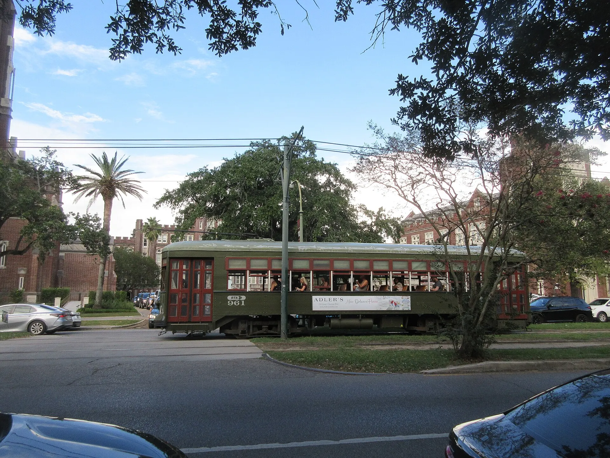
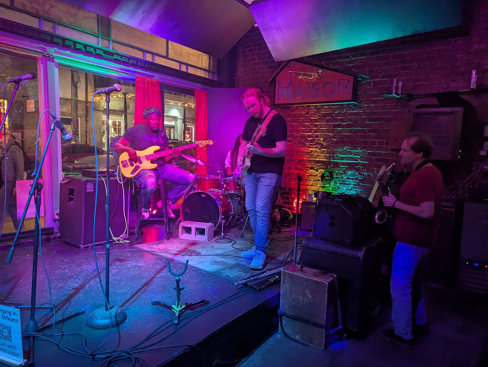

Connect
Meet students who are building things and students who want to start.

Loyola University Ventures New Orleans, Louisiana
St. Charles Avenue at Loyola
A student entrepreneurship club at Loyola University New Orleans.
You don't need a company or a finished idea. LUV is for Loyola students who want to meet people, work on ideas, and make something with them.
Meet students who are building things and students who want to start.
Bring your idea to someone else's skill, or your skill to someone else's idea.
Turn a conversation into something you can put in front of people.
Here's one way to get an idea moving.
A problem on campus or in the city that you keep running into.
Talk to the people who deal with it. Find out what you've missed.
Show someone what you made. Then change what didn't work.

Loyola sits on St. Charles Avenue. Across the city, artists, musicians, cooks, and shop owners make their own work. There's plenty to notice beyond campus.
Musicians at Maison on Frenchmen Street. November 2025.
These university resources are separate from LUV. They're here if you want to keep exploring.
There isn't a signup yet. Check back here for the link when it's ready.
Event updates and official club membership are separate.